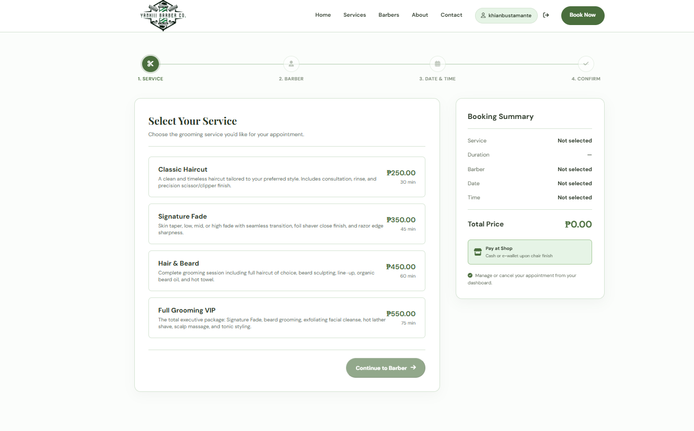
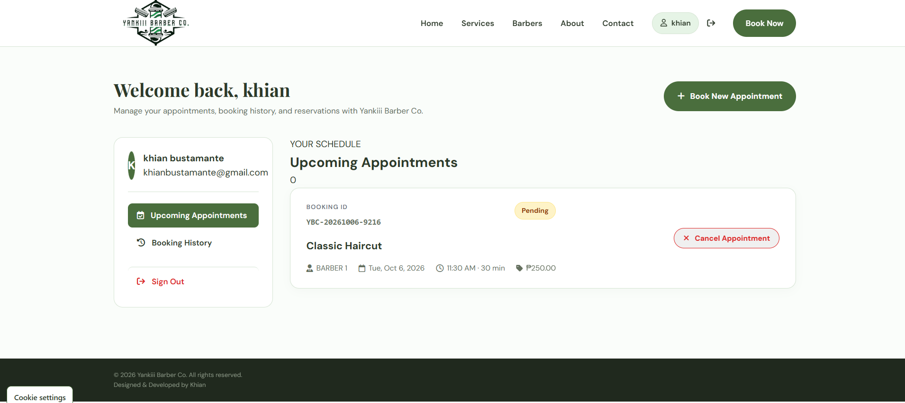
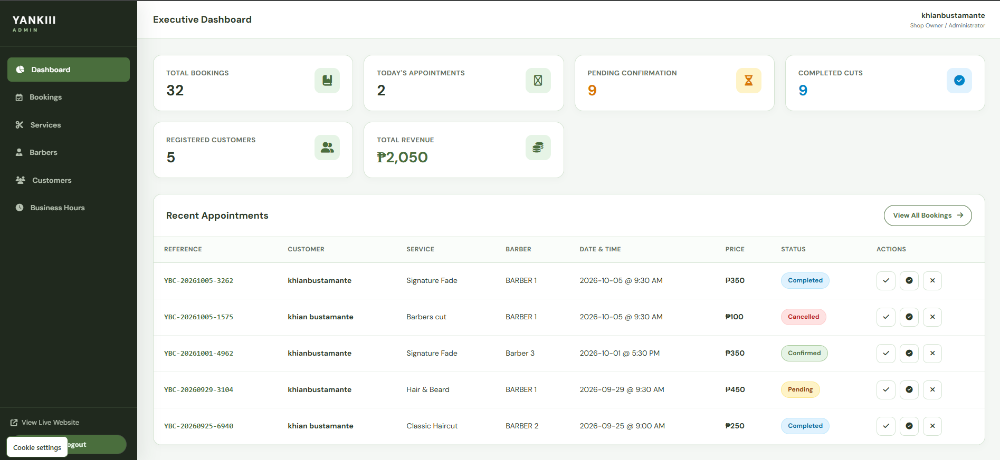
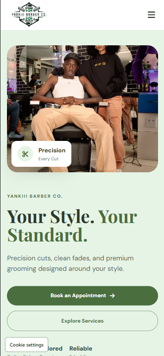

Problem
Booking a barbershop appointment involves multiple coordinated decisions: selecting a service, choosing a barber, checking real-time availability, and confirming the appointment schedule. Yankiii Barber Co. brings these steps into a unified full-stack application while providing an administrative management interface for barbershop staff to manage services, barbers, and bookings.
My role
I designed and developed the project as a full-stack web application, implementing the customer-facing interface, booking workflow, customer authentication, backend REST API, database schema, and administrative dashboard.
Key features
Stack
HTML, CSS, JavaScript, Node.js, Express.js, MySQL, JWT, bcrypt, Nodemailer, Express Rate Limit, and CORS. The application is deployed on Vercel.
Architecture & technical breakdown
A hard problem
Coordinating appointment availability across individual barbers and business hours while preventing double-bookings. The backend enforces structured booking logic across controllers, routes, and middleware, ensuring that customer authentication, barber schedules, and appointment slots remain consistent and validated.
What I would do differently
I would continue improving the system around production readiness, expanding automated end-to-end testing for peak booking concurrency, adding customer SMS notifications alongside email confirmations, and providing barbershop staff with richer operational reporting.